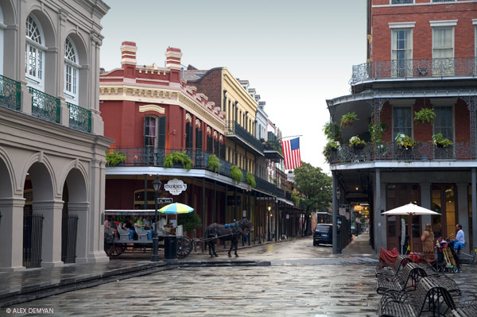
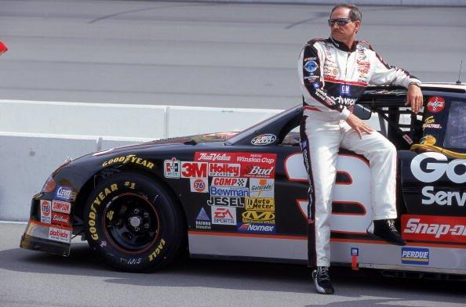

Visit New Orleans

A person I admire (past or present)
A person I admire is Dale Earnhart Sr. He was a talented NASCAR driver.
Learn more about Dale Earnhart Sr.

Favorite Fruits
- Watermelon
- Pineapple
- Strawberries
- Apples
- Oranges
Favorite Presidents
- Washington
- Lincoln
- Roosevelt
- Jackson
- Jefferson
My Favorite Animal
Go to Project 3